Ventanas reales del juego hbweb v0.85.28 · Integración 11 · generado 2026-10-16 12:27 con python tools/capturar_ventanas.py · 35 ventanas.
Las que dependen de un NPC o estado concreto pueden verse vacías.
Menú automático id 74 · 617x631 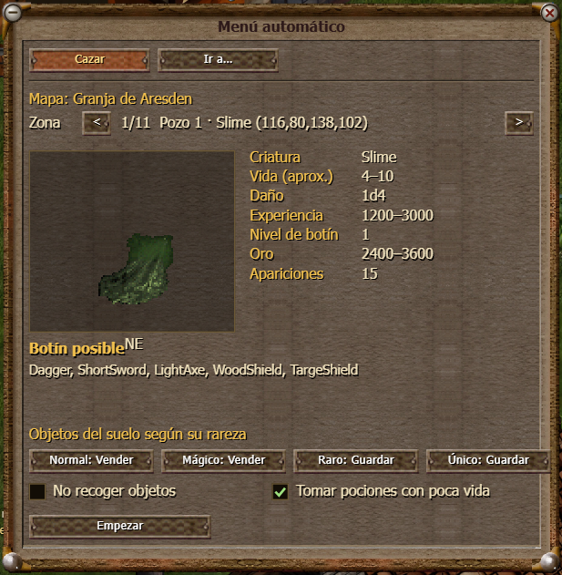
Auto Hunt (mini) id 75 · 311x132 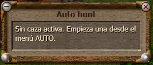
Novedades y pruebas id 70 · 777x711 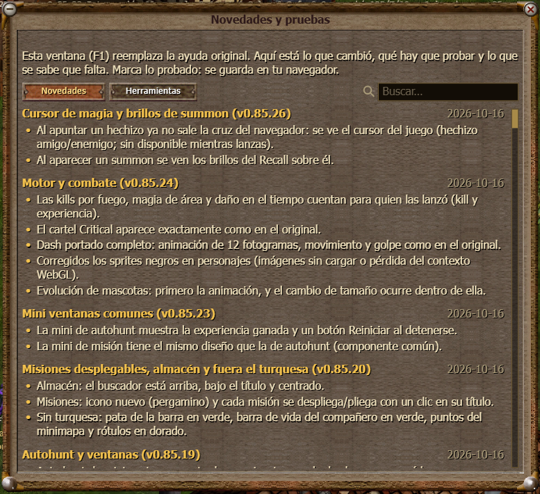
Diario de misiones id 49 · 564x537 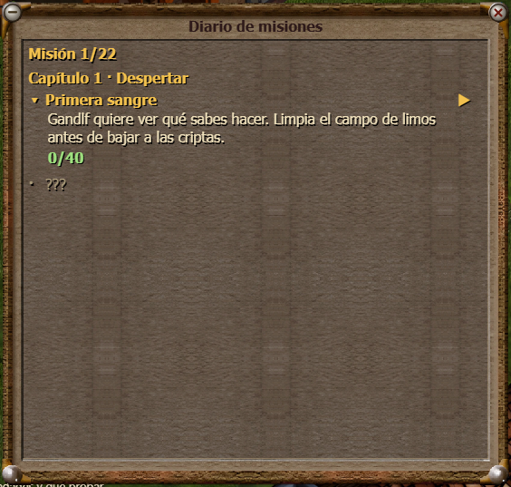
Misión (mini) id 76 · 311x236 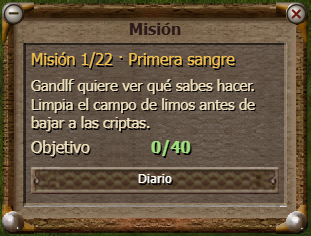
Ventana 90 id 90 · 431x204 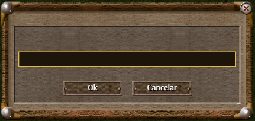
Ventana 91 id 91 · 431x204 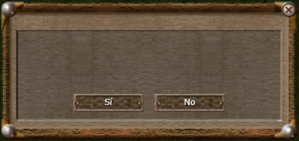
Simulador de estadísticas id 73 · 537x593 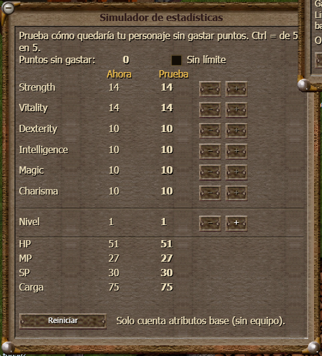
Informar de un fallo id 72 · 564x215 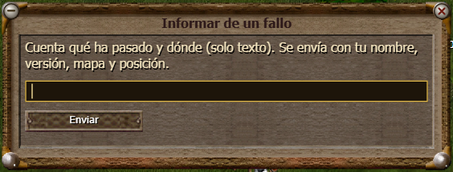
Personaje id 1 · 364x505 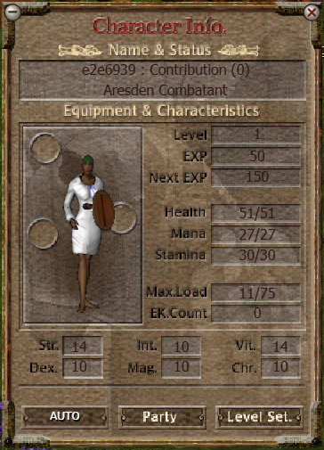
Inventario id 2 · 304x251 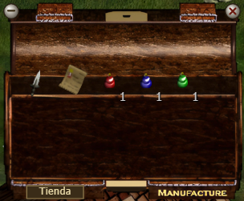
Equipo/Magia id 3 · 348x441 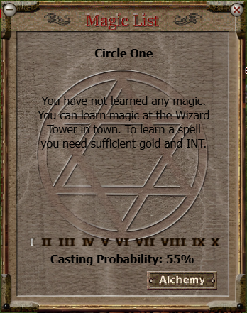
Ventana 16 id 16 · 409x441 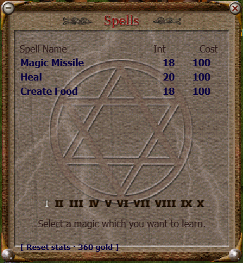
Ventana 12 id 12 · 348x456 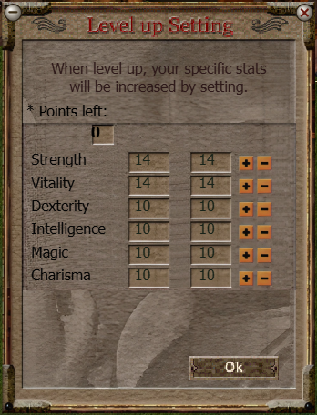
Ventana 19 id 19 · 348x361 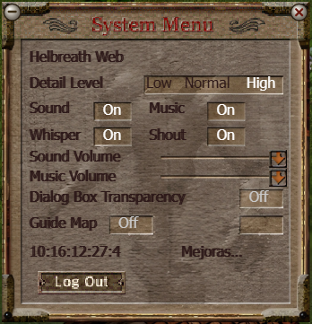
Ventana 60 id 60 · 511x633 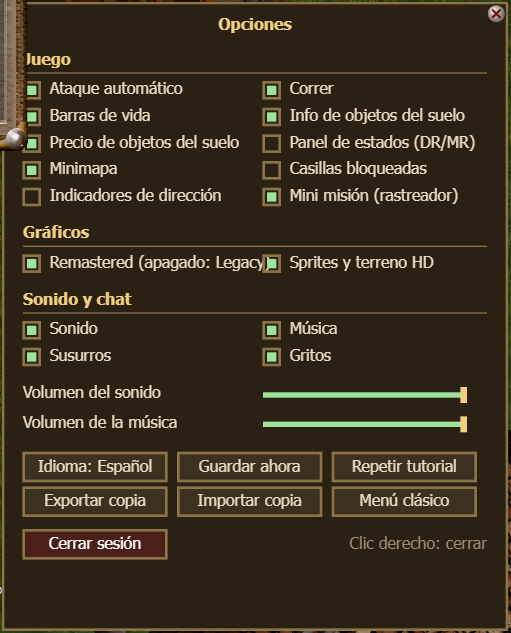
Ventana 15 id 15 · 348x456 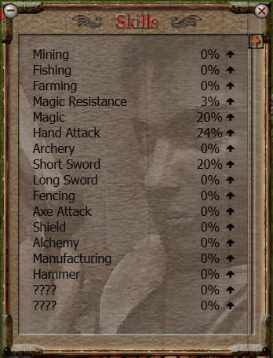
Chat Log id 10 · 724x457 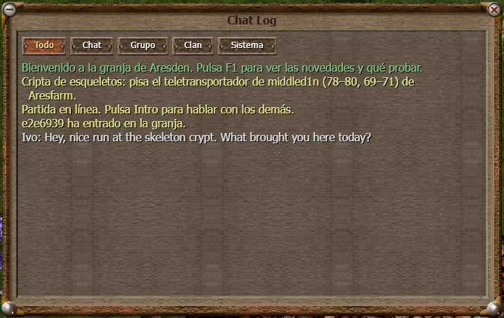
Summon id 45 · 348x456 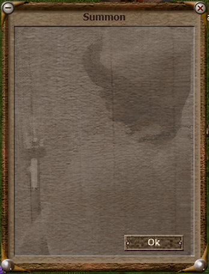
Ventana 17 id 17 · 291x120 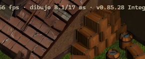
Ventana 21 id 21 · 697x204 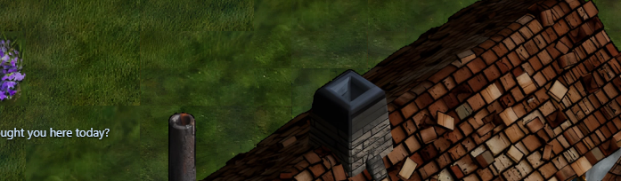
Ventana 20 id 20 · 291x120 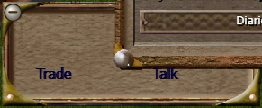
Ventana 11 id 11 · 348x456 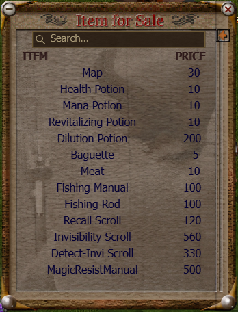
Ventana 23 id 23 · 348x456 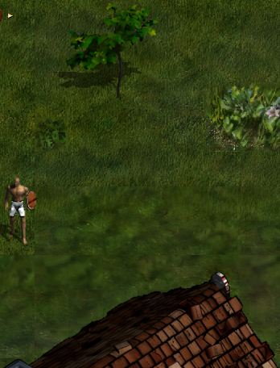
Ventana 31 id 31 · 348x456 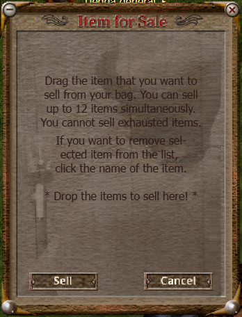
Almacén id 14 · 348x456 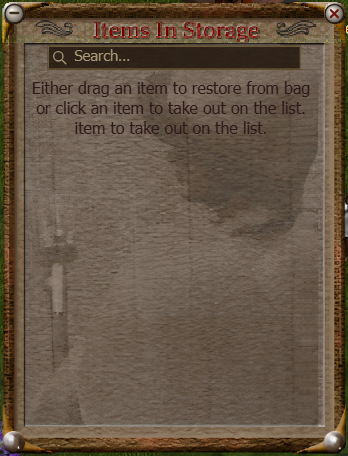
Hospital de compañeros id 41 · 348x456 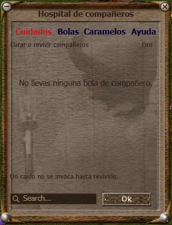
Apuestas · Arena id 44 · 348x456 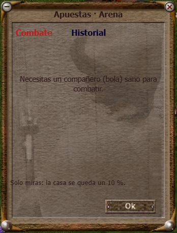
Tutorial id 46 · 804x231 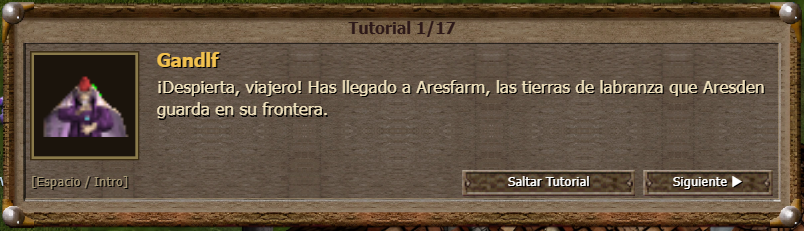
Ventana 32 id 32 · 348x456 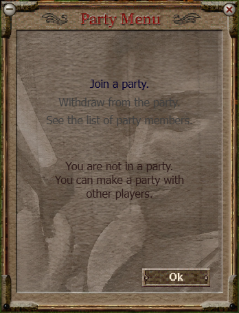
Ventana 33 id 33 · 701x479 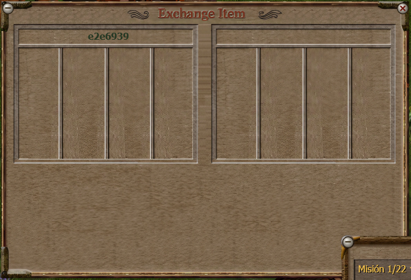
Puesto id 48 · 697x456 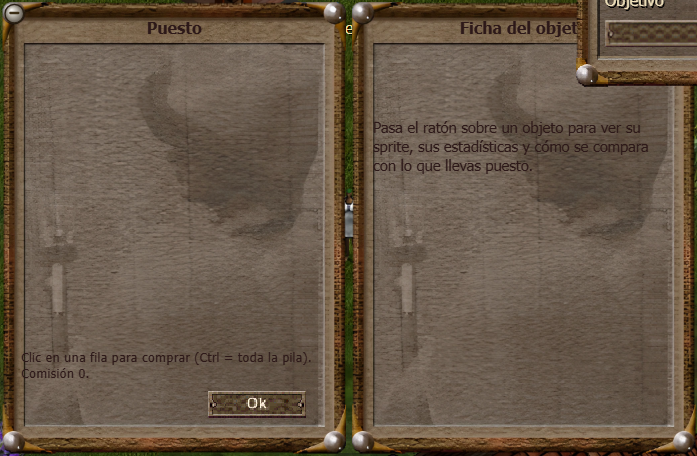
Guild id 34 · 348x456 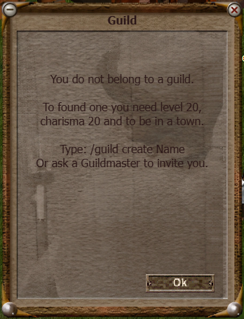
Summons id 43 · 348x456 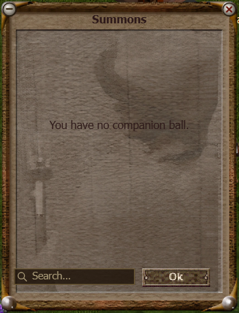
Ventana 47 id 47 · 511x204 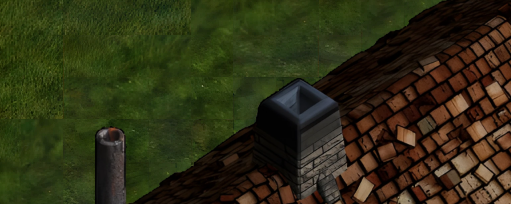